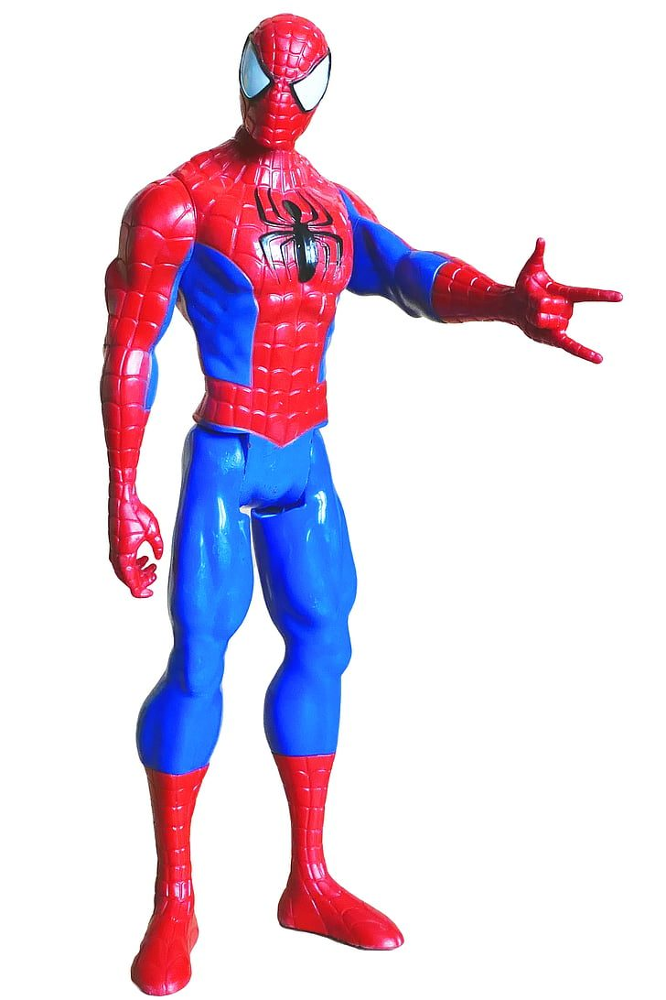

De beste Spider-Man actiefiguren
Er zijn tientallen Spider-Man figuren en op de foto lijken ze allemaal op elkaar. Hier staan er vijf die echt van elkaar verschillen, met eerlijk erbij voor wie ze wel en niet leuk zijn.

In het kort
Vijf Spider-Man figuren die echt van elkaar verschillen. Klik op een naam om naar de uitleg te springen. De prijzen komen rechtstreeks van bol en zijn dus altijd de prijs van vandaag.
Waar het verschil in zit
Op een foto lijken Spider-Man figuren sterk op elkaar. In het echt zitten de verschillen op vier plekken.
Grootte. De meeste figuren zijn 10, 15 of 30 centimeter. Een figuur van 30 centimeter is stevig en indrukwekkend om mee te spelen, maar hij past niet in een broekzak. Een figuur van 10 of 15 centimeter neem je overal mee naartoe.
Hoeveel hij buigt. Dit is het grootste verschil en het staat bijna nooit op de doos. De Titan Hero figuren van Hasbro buigen op een stuk of vijf plekken: armen, benen en hoofd. De Marvel Legends figuren zijn de verzamellijn en buigen op veel meer plekken, tot in de vingers en de enkels aan toe. Wil je poses namaken uit de film, dan is dat het verschil tussen leuk en frustrerend.
De leeftijd op de doos. Die staat er niet voor niets. Bij verzamelfiguren zitten kleine losse onderdelen, en die zijn er niet op gemaakt dat ze dagelijks van tafel vallen.
De prijs. Tussen de goedkoopste en de duurste figuur op deze pagina zit meer dan het dubbele. Dat verschil zit vooral in de afwerking, niet in het speelplezier.
Onze vijf keuzes
Titan Hero Miles Morales, 30 cm
Dertig centimeter, stevig plastic en van alle figuren op deze pagina de enige met een flink aantal beoordelingen achter zich. Miles Morales is ook Spider-Man, bekend van de tekenfilms Into the Spider-Verse. Voor een kind dat vooral wil spelen en niet wil poseren, is dit de veiligste keuze van de vijf.
- Groot en stevig, kan tegen een stootje
- Verreweg de meeste beoordelingen van alle figuren hier
- Meestal morgen in huis
- Buigt maar op een paar plekken, dus poseren lukt beperkt
- Miles draagt een zwart met rood pak, en sommige kinderen willen juist het klassieke rode pak
Titan Hero Spider-Man Brand New Day, 30 cm
Hetzelfde formaat en dezelfde serie als de keuze hierboven, voor ongeveer de helft van het geld, en met het pak uit Brand New Day, de film die nu in de bioscoop draait. Voor een klassencadeautje of een schoencadeau is dit de slimste van de vijf.
- Goedkoopste van de vijf
- Zelfde stevige formaat van 30 centimeter
- Het pak dat kinderen nu in de bioscoop zien
- Nog geen enkele beoordeling, want hij ligt pas net in de schappen
- Buigt net zo weinig als de andere Titan Hero figuren
Spidey and his Amazing Friends Dino-Webs, 10 cm
Uit Spidey and his Amazing Friends, de serie die voor kleuters gemaakt is en niet spannend of eng wordt. Het figuurtje is klein genoeg voor kleine handen en er zit meteen een dinosaurus bij, dus er is direct een spel om te spelen in plaats van alleen iets om vast te houden.
- Gemaakt voor de kleuterleeftijd, ook qua verhaal
- Er zit een tweede figuur bij, dus samen spelen kan meteen
- Handzaam formaat
- Tien centimeter oogt klein naast een figuur van dertig
- Nog maar een handvol beoordelingen
Marvel Legends Spider-Man Upgraded Suit, 15 cm
Dit is de verzamellijn van Hasbro. Hij is kleiner dan de Titan Hero figuren maar buigt op veel meer plekken, is fijner geschilderd en heeft meestal losse handen die je kunt wisselen. Voor een kind dat poses uit de film wil namaken of zijn figuren op een plank zet, is dit de enige echte keuze in deze rij.
- Buigt op veel meer plekken dan de andere figuren hier
- Veel fijner geschilderd, staat goed op een plank
- Meestal losse handen om te wisselen
- Kleine losse onderdelen, dus niet geschikt voor kleuters
- Duurste van de vijf
- De verpakking is bedoeld om te bewaren, niet om open te scheuren
Hasbro Venom, 10 cm
Bijna elk kind dat Spider-Man leuk vindt, wil op een gegeven moment ook Venom hebben. Zonder tegenstander valt er weinig te spelen: een held alleen doet niets. Dit is de goedkoopste manier om er een in huis te halen, en voor dat geld hoef je er niet zuinig op te zijn.
- Goedkoopste manier om een tegenstander toe te voegen
- Klein en stevig, mag mee in een rugzak
- De bekendste tegenstander van Spider-Man
- Tien centimeter, dus hij oogt klein naast een figuur van dertig
- Slechts twee beoordelingen, dus die score zegt weinig
- Jonge kinderen vinden Venom soms eng, zie onze eng-o-meter
Welke figuur past bij welke leeftijd
3 tot 5 jaar. Blijf bij Spidey and his Amazing Friends. Die serie is voor deze leeftijd gemaakt, de figuren hebben geen kleine losse onderdelen en de verhalen worden nooit eng. Een verzamelfiguur is op deze leeftijd zonde van het geld: de losse handjes zijn binnen een week kwijt.
5 tot 8 jaar. Dit is de leeftijd van de Titan Hero figuren van 30 centimeter. Groot, stevig, en er kan van alles mee gebeuren zonder dat er iets breekt. Twee figuren van dezelfde serie, een held en een tegenstander, geven meer speelplezier dan een dure figuur in zijn eentje.
8 jaar en ouder. Nu wordt hoeveel een figuur buigt belangrijker dan hoe groot hij is. Een Marvel Legends figuur van 15 centimeter kan poses aannemen die een Titan Hero nooit haalt, en dat is precies waar kinderen op deze leeftijd naar op zoek zijn. Wil je meer per leeftijd, lees dan Spider-Man cadeau per leeftijd.
Wat wij niet zouden kopen
Verzamelbeelden van boven de honderd euro. Die staan er prachtig bij, maar ze zijn niet gemaakt om mee te spelen. Bij een kind komen ze binnen een maand met een afgebroken hand terug.
Funko Pop figuren als speelgoed. Ze staan tussen de actiefiguren en ze kosten ongeveer hetzelfde, maar ze bewegen niet. Ze zijn bedoeld om neer te zetten. Als cadeau voor een kind dat wil spelen, is dat een teleurstelling bij het uitpakken.
Sets waar Spider-Man alleen in de titel staat. Zoek je op Spider-Man, dan komen er ook dozen voorbij waar hij niet in zit maar wel in de productnaam staat. Kijk altijd even naar de foto en tel wat er echt in de doos zit.
Veelgestelde vragen
Welke maat Spider-Man figuur kies je? Figuren van 30 centimeter zijn stevig en fijn om mee te spelen, maar buigen weinig. Figuren van 15 centimeter uit de verzamellijn buigen op veel meer plekken en zijn bedoeld voor kinderen vanaf ongeveer acht jaar. Voor kleuters is 10 centimeter uit de Spidey and his Amazing Friends lijn het handigst.
Vanaf welke leeftijd is een Spider-Man verzamelfiguur geschikt? Verzamelfiguren zoals de Marvel Legends lijn hebben kleine losse onderdelen, waaronder wisselbare handen. Die zijn geschikt vanaf ongeveer acht jaar. Voor jongere kinderen zijn de Titan Hero figuren of de Spidey and his Amazing Friends figuren een betere keuze.
Is een Funko Pop een actiefiguur? Nee. Een Funko Pop ziet eruit als een figuur en kost ongeveer evenveel, maar hij beweegt niet en is bedoeld om neer te zetten. Voor een kind dat wil spelen is dat een teleurstelling.
Hoe wij deze vijf gekozen hebben
Deze vijf zijn met de hand uitgezocht, niet automatisch opgehaald op wat het beste verkoopt. We hebben gekeken naar de beoordelingen bij bol, naar de prijs en naar of het figuur op dat moment gewoon leverbaar was. Alle vijf blijven onder de dertig euro.
Eerlijk erbij: speelgoed krijgt bij bol vaak maar een paar beoordelingen. Vijf sterren uit twee beoordelingen zegt bijna niets. Daarom staat bij elke keuze hoeveel mensen er iets van vonden, en waar dat er nog geen zijn, zeggen we dat gewoon in plaats van te doen alsof.
Via de knoppen naar bol verdienen wij een kleine commissie. Dat verandert niets aan welke figuren hier staan: we kiezen ze voordat we naar de vergoeding kijken, en een figuur die we niet zouden aanraden komt er niet in. Gecontroleerd op 24 augustus 2026.
💡 Wist je dat?
De duurste Spider-Man figuren buigen op ruim twintig plekken. De goedkoopste op vijf. Dat verschil zie je pas als je ze naast elkaar in dezelfde pose probeert te zetten.
Meer lezen? Bekijk de hele Spider-Man pagina, of alle gidsen.